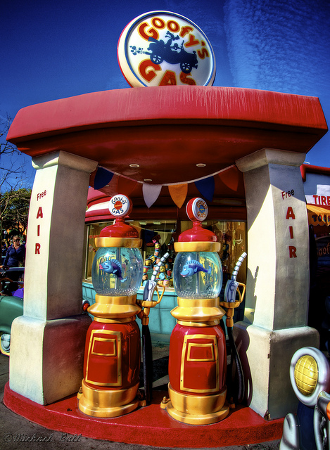

Fill Up at Goofy’s Gas! on Flickr.
Via Flickr: Given Goofy’s nature, I’m sure this is some of the highest octane fuel you can find in So Cal! There’s no guarantee of what it may do to your vehicle, but you’re sure to have a fun ride!